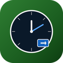

Time Action
指定時刻にキーボードイベントを自動送出するデスクトップツール（Slack等への定期投稿・単発キー送出を自動化）
macOSWindows
ダウンロード
macOS — 未リリースWindows — 未リリース
説明
指定時刻にキーボードイベントを自動送出するデスクトップツールです。 Slack等のチャットアプリへの定期投稿や、指定時刻での単発キー送出を自動化できます。 スケジュールは「○時間○分○秒後に1回」「指定日時に1回」「○時間おきに繰り返し」「毎日○時○分に繰り返し」の 4種類に対応。実際のキー入力からショートカットを記録できるキーキャプチャ機能や、送出前にクリップボードへ 任意の文字列を貼り付ける機能（Slack/Discord/VSCode/Chrome等のElectron/Chromium系アプリにも確実に届く）を備えています。 ウィンドウを閉じてもトレイに常駐し、バックグラウンドでスケジュールを実行し続けます。
主な機能
- スケジュール管理（once / at / interval / daily、有効・無効切替）
- キーキャプチャ入力（実際のキー入力からショートカットを記録）
- 送出前クリップボード貼り付け（Electron/Chromium系アプリにも確実に到達）
- テスト送出（実際に発火させず動作確認）・実行ログ
- ウィンドウを閉じてもトレイ常駐しバックグラウンド実行を継続
- 有効なスケジュール実行中のPCスリープ・自動ロック抑止オプション
- macOSアクセシビリティ権限の状態表示・設定画面への導線